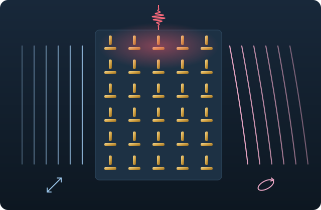
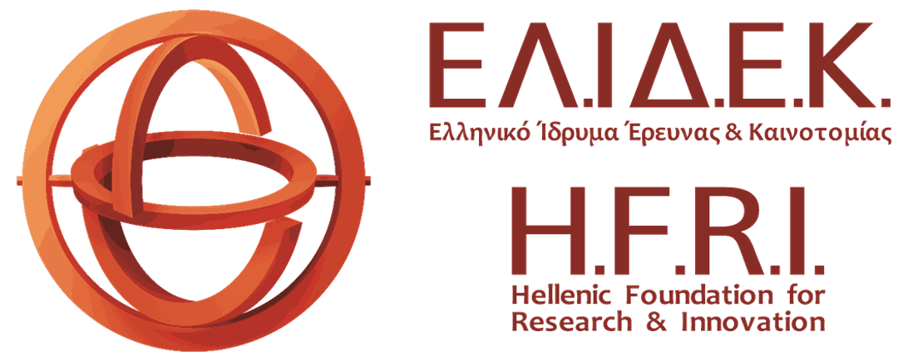
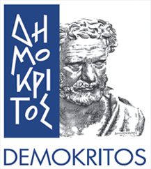

Metastructures for Dynamic Optical Wavefront Manipulation
METAWAVE develops low-cost metasurfaces that shape the wavefront, polarisation and angular momentum of light, and switch those properties within femtoseconds using light alone.
- Duration
- 1 February 2026 to 31 January 2028
- Host
- Institute of Nanoscience and Nanotechnology, NCSR “Demokritos”
- Funding
- Hellenic Foundation for Research and Innovation (HFRI), project 28197

The project
Future 6G-and-beyond networks will combine optical fibres, free-space optical links and visible-light communication. They need compact components that steer, shape and modulate light quickly and cheaply. Metasurfaces, arrays of nanostructures smaller than the wavelength of light, can control every degree of freedom of light. They are usually made with slow, expensive lithography, though, and their function is fixed once they are fabricated.
METAWAVE tackles both problems. It designs metal and dielectric metastructures whose optical response can be tuned all-optically, using the ultrafast heating of electrons by femtosecond laser pulses. It makes them by nanoimprint lithography, a low-cost, low-energy method that scales to roll-to-roll production, and imprints them directly onto optical fibre facets and side-polished fibres.
The work combines electromagnetic simulation and optimisation, nanofabrication at the Institute of Nanoscience and Nanotechnology of NCSR “Demokritos”, and optical, cathodoluminescence and femtosecond pump-probe characterisation.
Objectives
-
Control of far and near fields
Design and optimise metastructures that control the amplitude, polarisation, spin and orbital angular momentum, and direction of light, both for external beams and for light emitted by nearby sources. Map their local optical response at the nanoscale with cathodoluminescence.
-
Scalable, low-cost fabrication
Replicate the designs by nanoimprint lithography from silicon master stamps, and demonstrate roll-to-roll upscaling to large, flexible surfaces such as films applied to LED lamps.
-
Integration on optical fibres
Imprint metastructures directly on optical fibre facets and side-polished fibres to control light inside fibre networks.
-
Ultrafast all-optical switching
Switch the optical response on femtosecond-to-picosecond timescales with pump-probe excitation, aiming at modulation speeds of terabits per second.
Work plan
WP1 Specifications and theory
Specifications, electromagnetic simulation (FDTD and boundary-element methods) and optimisation of the metastructures, including fibre integration and ultrafast response.
WP2 Fabrication
Silicon master stamps, nanoimprint replication, imprinting on optical fibres and roll-to-roll upscaling.
WP3 Characterisation
Polarisation- and angular-momentum-resolved optical measurements, cathodoluminescence nanoscopy, fibre measurements and femtosecond pump-probe experiments.
WP4 Dissemination and communication
Publications, conferences, this website, student workshops and contact with industry.
WP5 Project management
Coordination, open and FAIR data management, and risk management.
Team
Dr Nikolaos Matthaiakakis
Principal Investigator
Postdoctoral researcher at the Institute of Nanoscience and Nanotechnology, NCSR “Demokritos”. PhD in Electronics and Electrical Engineering from the University of Southampton (2017), followed by postdoctoral research at the Tokyo Institute of Technology, the National Hellenic Research Foundation and NCSR “Demokritos” on plasmonics, 2D materials, metasurfaces and ultrafast photonics.
Advisory board
Dr Nikos Kehagias
Nanoimprint and roll-to-roll lithography
Institute of Nanoscience and Nanotechnology, NCSR “Demokritos”
Dr George Kakarantzas
Optical fibres and ultrafast optics
Theoretical and Physical Chemistry Institute, National Hellenic Research Foundation
Dr Takumi Sannomiya
Cathodoluminescence and electron spectroscopy
Institute of Science Tokyo
Results
-
N. Matthaiakakis, L. Testé, G. KakarantzasUltrafast all-optical polarization control via symmetry breaking in an Au nanorod dimer metamaterialPreprint, arXiv:2607.02733 (2026)
Simulations show that exciting one rod of an orthogonal gold nanorod pair with a femtosecond pulse rotates the polarisation of transmitted light by up to about 20° within a picosecond, while transmission stays near 40%.
News
The project’s first paper, on ultrafast all-optical polarisation control in a gold nanorod dimer metamaterial, is available as a preprint on arXiv.
METAWAVE started at the Institute of Nanoscience and Nanotechnology of NCSR “Demokritos”.
Contact
Dr Nikolaos Matthaiakakis
Institute of Nanoscience and Nanotechnology, NCSR “Demokritos”
15341 Agia Paraskevi, Athens, Greece
n.matthaiakakis [at] inn.demokritos.gr
Funding


The research project is implemented in the framework of H.F.R.I call “4th Call for H.F.R.I.’s Research Projects to Support Postdoctoral Researchers” (H.F.R.I. Project Number: 28197).
Το ερευνητικό Έργο με τίτλο «Μεταδομές για Δυναμική Διαμόρφωση Οπτικών Μετώπων» υλοποιείται στο πλαίσιο της δράσης του ΕΛ.ΙΔ.Ε.Κ. «4η Προκήρυξη Ερευνητικών έργων ΕΛ.ΙΔ.Ε.Κ. για την ενίσχυση Μεταδιδακτορικών Ερευνητών/τριών» (Αριθμός Έργου ΕΛ.ΙΔ.Ε.Κ.: 28197).